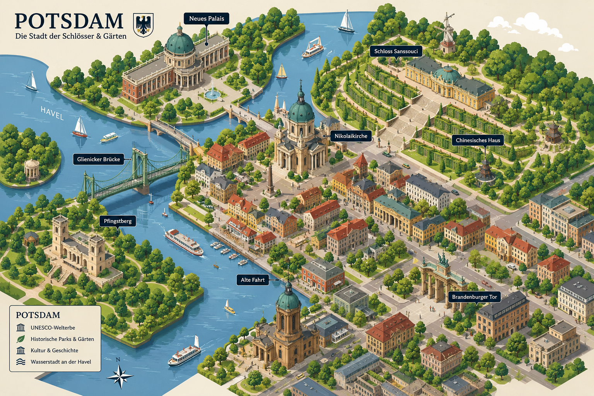

Neues Palais
Neues Palais
Das letzte große Barockschloss Friedrichs des Großen am Westende des Parks Sanssouci. Berühmt für seine prunkvollen Festsäle.
Schloss Sanssouci
Schloss Sanssouci
Das weltberühmte Sommerschloss Friedrichs des Großen auf den Weinbergterrassen. Ein Meisterwerk des Rokoko.
Chinesisches Haus
Chinesisches Haus
Ein Pavillon im Park Sanssouci, der den damaligen Modetrend der Chinoiserie im 18. Jahrhundert widerspiegelt.
Nikolaikirche
Nikolaikirche
Die markante Kuppelkirche am Alten Markt, entworfen von Karl Friedrich Schinkel, prägt die Silhouette der Innenstadt.
Glienicker Brücke
Glienicker Brücke
Weltbekannt als „Agentenbrücke" für den Austausch von Spionen zwischen Ost und West während des Kalten Krieges.
Pfingstberg
Belvedere auf dem Pfingstberg
Ein romantisches Aussichtsschloss nach Vorbildern der italienischen Renaissance mit einem fantastischen Blick über Potsdam.
Alte Fahrt
Alte Fahrt
Ein Nebenarm der Havel im Zentrum Potsdams, der die Freundschaftsinsel umfließt und beliebt für Bootsfahrten ist.
Brandenburger Tor
Brandenburger Tor (Potsdam)
Dieses Tor steht am Luisenplatz und ist sogar älter als das gleichnamige, bekanntere Tor in Berlin.